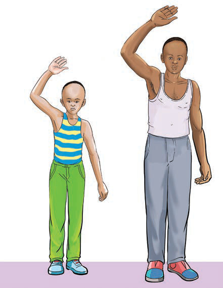

Exercise 2
1. (a) Explain the meaning of puberty.
(b) Explain any five (5) physical changes that occur in:
(i) girls
(ii) boys.
2. (a) Explain the meaning of menstruation?
(b) Briefly describe disorders that occurs to a woman when she experiences menstruation.
3. Explain any two (2) disorders in the menstrual cycle.
Social changes during puberty
During puberty, boys and girls experience the following social changes:
(a) Self-awareness: During puberty, adolescents begin to explore and understand themselves better, recognising their identity as boys or girls and developing emotional connections.